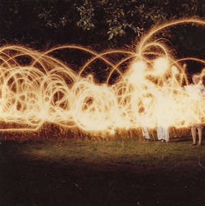
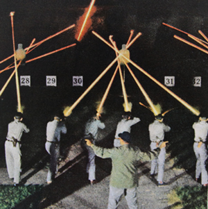

|  |  | |
past exhibition | ||
Nite LiteElizabeth Huey Gallery Hours: |
The Wild Project is pleased to present Nite Lite, a solo exhibition of photographs and a slideshow by the artist Elizabeth Huey. Elizabeth Huey—an accomplished painter—began taking photographs casually, as a means of creating additional visual source material for her paintings. This exhibition reflects how, through close examination and the act of archiving, these photographs have taken greater precedence in her work. Set in landscapes with looming architecture and turbulent skies, Huey’s large-scale paintings expose historical and eccentric characters engulfed in psychological scenarios, both sinister and sublime. Inextricably linked, her photos share this same amalgam. The selection of images in the slideshow—varying from absurd party snapshots to serious science projects—vacillates between dualities: humorous and tragic, flat and dimensional, banal and unique, romantic and mischievous. Sharp contrasts and invasive flash intrusions disrupt the photographic frame creating an additional layer of ambiguity and a pervasive supernatural quality. Adept at appropriation and collage, some of the slides included are taken from various sources. Like Huey’s grand tableaus, these images transcend their original intent and source, becoming at once expressive and elusive. Born in Virginia, Elizabeth Huey presently lives and works in Brooklyn, New York. She earned her BA in Psychology from George Washington University and studied at both the Marchutz School in France and the New York Studio School, before receiving her MFA in Painting from Yale University in 2002. She has received awards such as a Terra Museum of American Art fellowship and residency in Giverny, France (2001), a travel fellowship to Italy from Johns Hopkins University (2006), and an Artist Research Fellowship from the Smithsonian Institution (2008). Huey’s paintings have been exhibited extensively both in the U.S. and abroad and are held in permanent collections at the Kemper Museum of Contemporary Art in Kansas City, Missouri and the Virginia Museum of Fine Arts in Richmond, Virginia. | |
exhibition archive |
|||
| 2016 | 2015 | 2014 | 2013 |
| 2011 | 2010 | 2009 | 2008 |